Установка Microsoft SQL Server 2008 Express Edition
Скачайте Microsoft SQL Server 2008 Express Edition. На странице загрузке после нажатия на красную кнопку Скачать появится список файлов. Нужно выбрать файл с именем SQLEXPRWT_x64_RUS.exe, если у вас 64-битная версия Windows, или файл SQLEXPRWT_x86_RUS.exe, если 32-битная.
Запустите скаченный файл. Для установки Microsoft SQL Server вы должны обладать правами администратора операционной системы.
На первом экране выберите первый пункт – "Новая установка или добавление компонентов к существующей установке"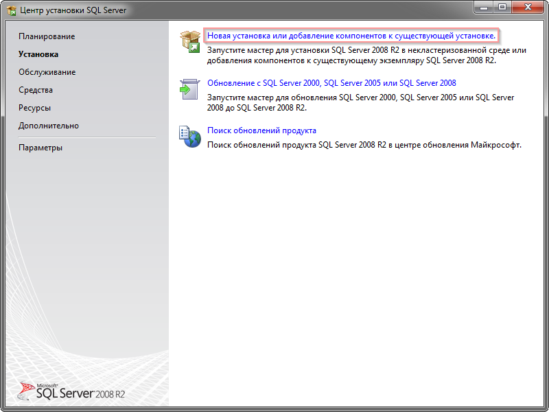
Появится экран с условиями лицензии:
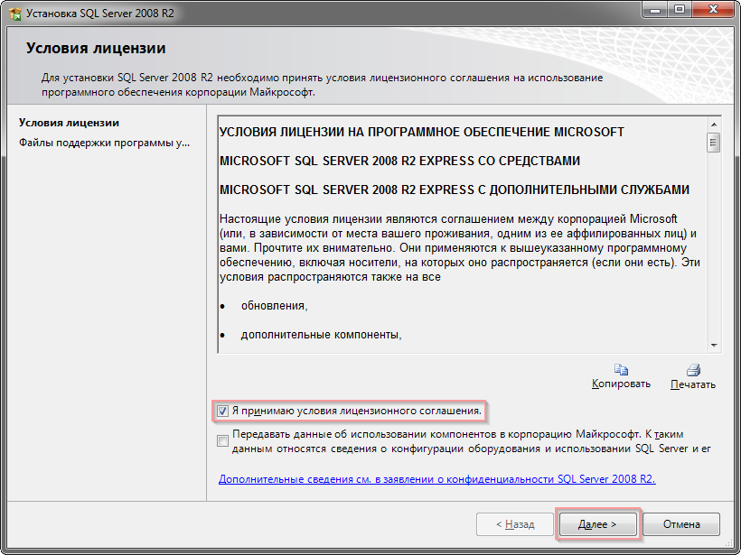
Для продолжения установки необходимо принять условия лицензионного соглашения и нажать кнопку "Далее".
На экране выбора компонентов снимите флаг с пункта "Репликация SQL Server" и нажмите "Далее".
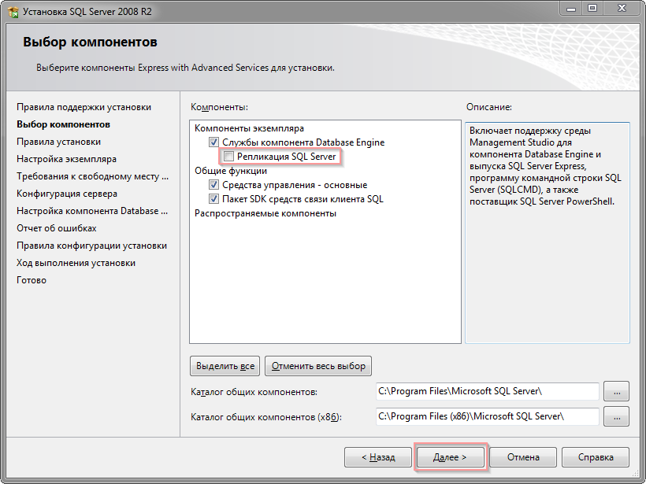
На следующем экране выберите первый пункт "Экземпляр по умолчанию":
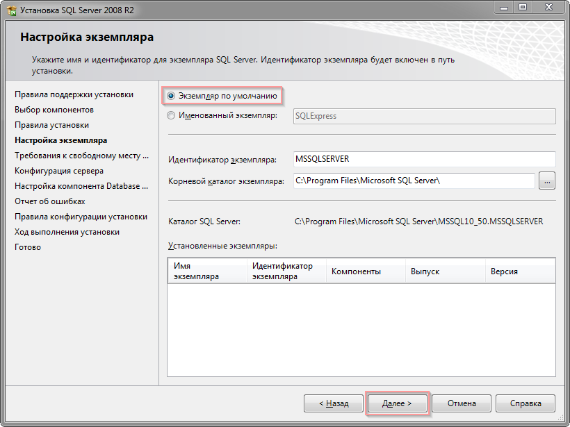
На экране "Конфигурация сервера" выберите значение "Авто" в колонке "Тип запуска" для службы "Браузер SQL Server":
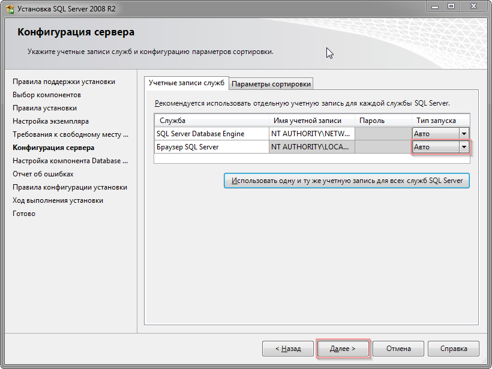
Выберите пункт "Смешанный режим" и введите пароль sa (системного администратора):
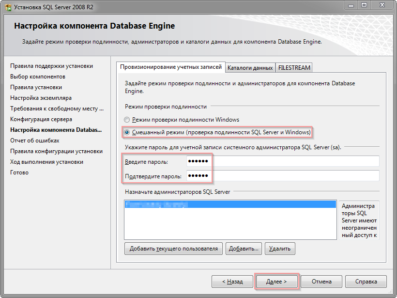
Запомните введенный пароль. Он понадобится вам при создании базы данных и для обслуживания базы данных.
На экране выбора параметров отчетов об ошибках нажмите кнопку "Далее":
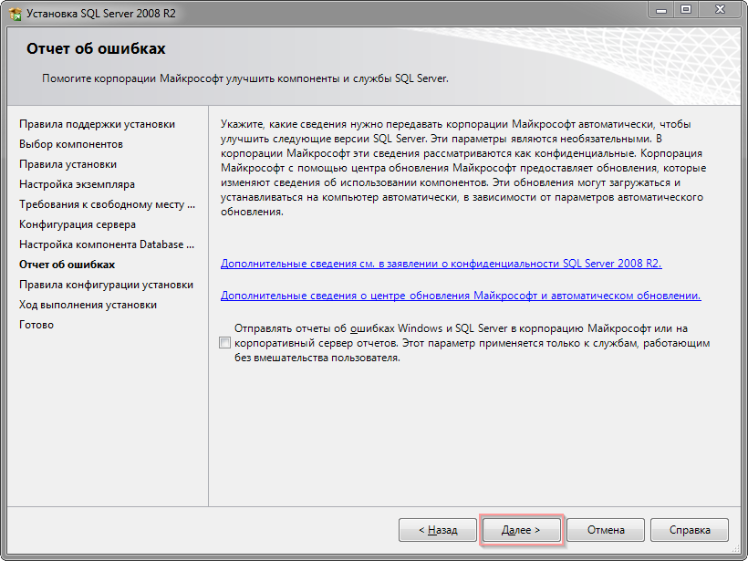
Начнется процесс установки:
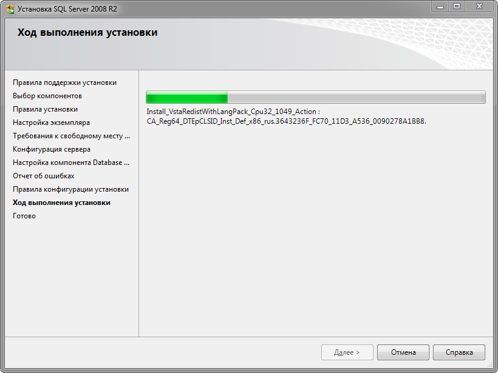
На следующем экране появится сообщение о завершении установки:
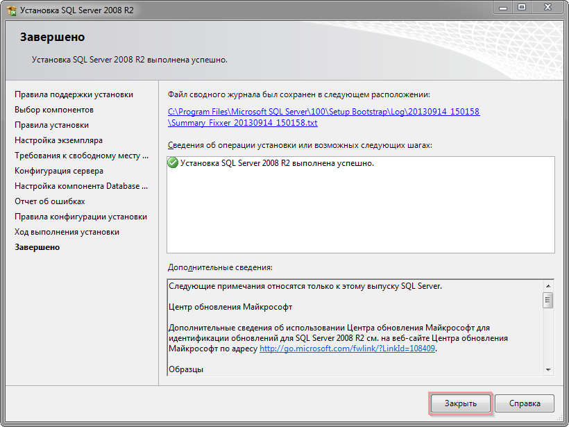
Нажмите кнопку "Закрыть".
Настройка Microsoft SQL Server 2008
После завершения установки "Microsoft SQL Server 2008 Express Edition" необходимо выполнить следующие действия для
настройки установленного SQL-сервера:
Запустите "Диспетчер конфигурации SQL Server" ("Пуск" → "Все программы" → "Microsoft SQL Server 2008 R2" → "Средства настройки" → "Диспетчер конфигурации SQL Server"):
В левой части экрана разверните пункт "Сетевая конфигурация SQL Server" и выберите его подпункт "Протоколы для
MSSQLSERVER". В правой части экрана выберите пункт "TCP/IP", и, нажав правой кнопкой, выберите в появившемся меню пункт "Включить".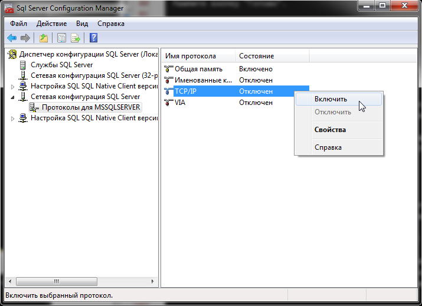
В левой части экрана выберите пункт "Службы SQL Server". В правой части экрана выберите пункт SQL Server (MSSQLSERVER), и, нажав правой кнопкой, выберите в появившемся меню пункт "Перезапустить".
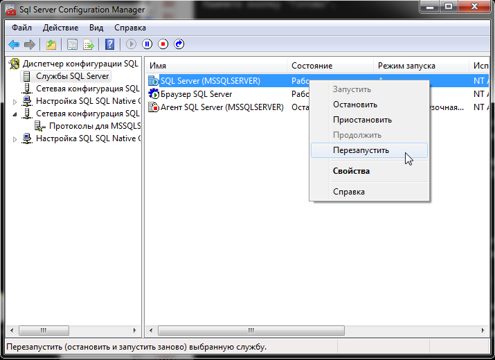
Настройка Microsoft SQL Server 2008 завершена.
Остались вопросы? Напишите нам на e-mail